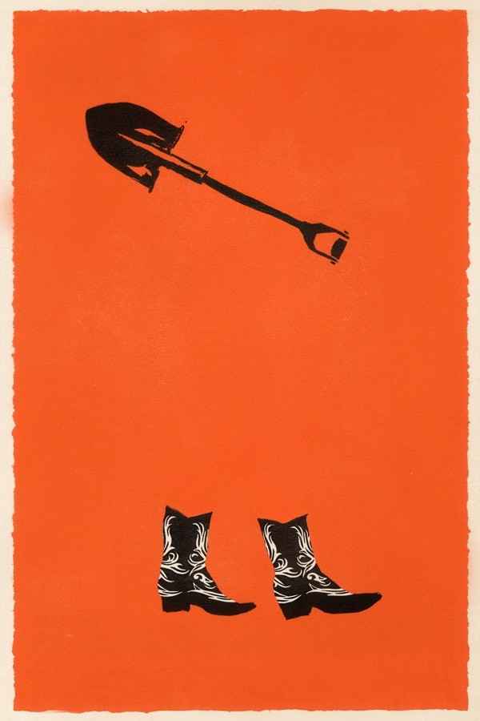
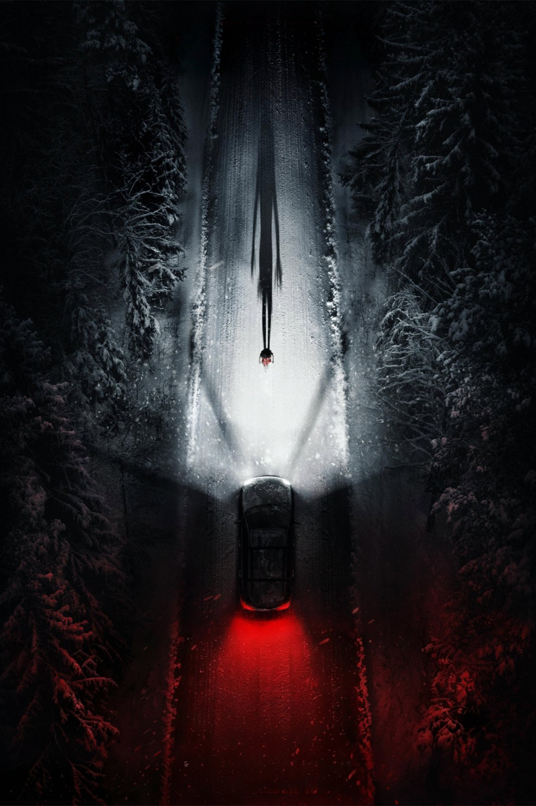
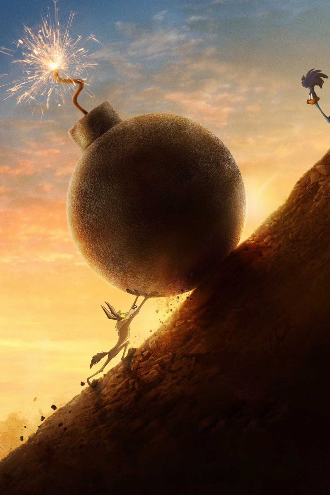
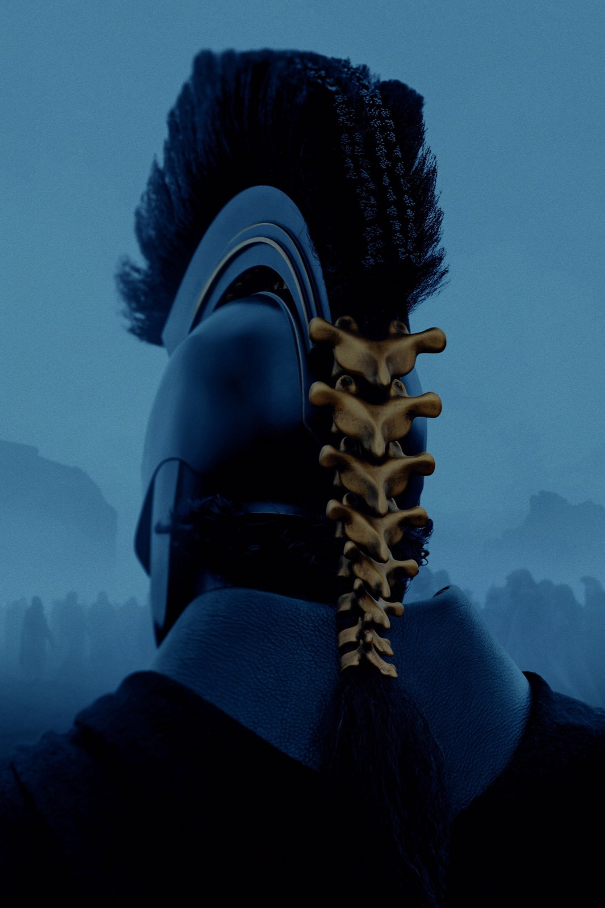
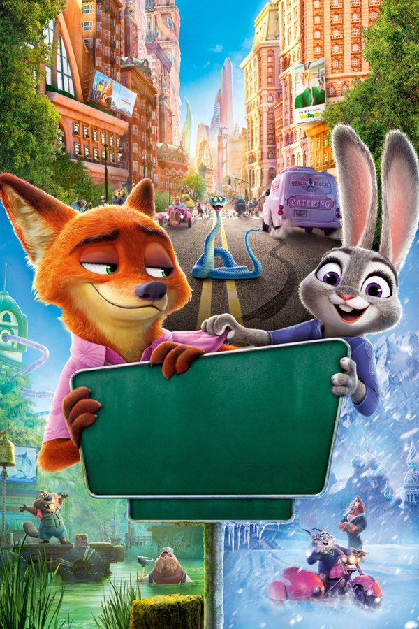
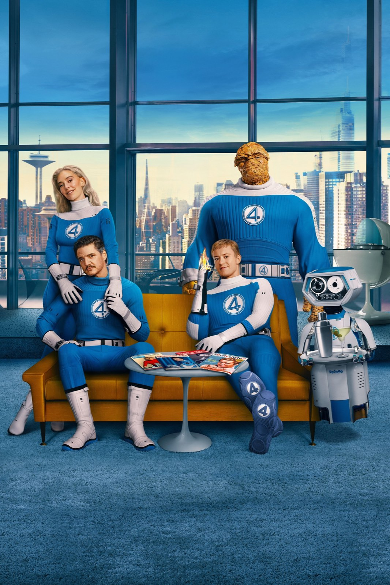
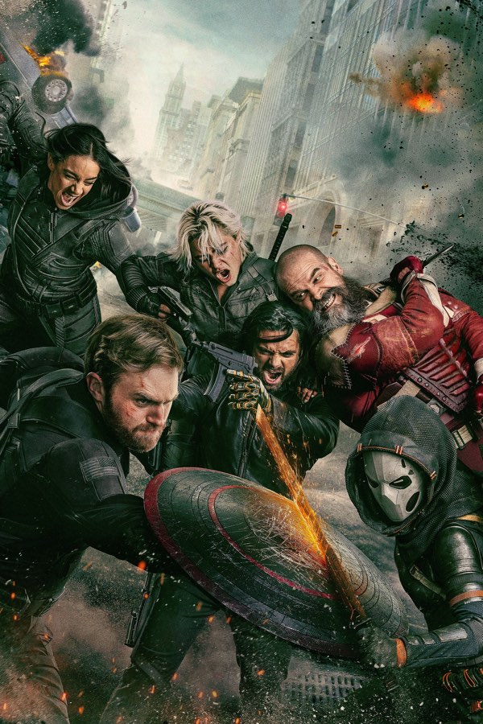
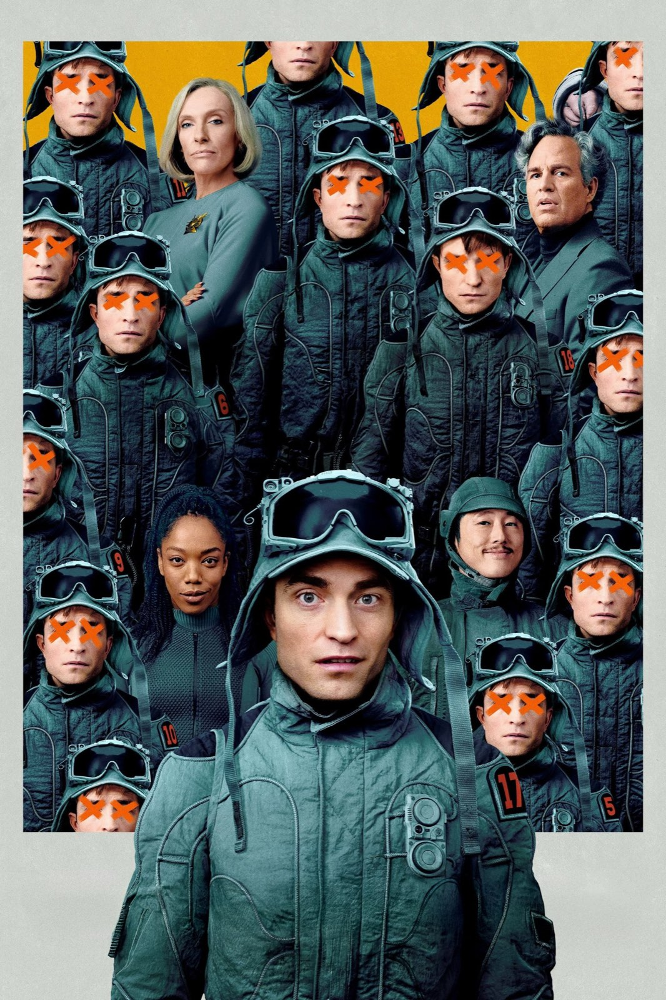

Recensioni
Recensioni di film al cinema e in streaming e di serie TV: trama senza spoiler, pregi, difetti e un verdetto chiaro, per scegliere cosa vedere stasera.
Tutti gli articoli
Ragione e sentimento (2026): recensione del film di Oakley
Un Austen sporco di fango che guadagna le sorelle ma perde Edward, e per questo divide la critica

Silo – Stagione 1
Un buco di 144 piani che si regge sulla curiosità: funziona, ma raffredda chi cerca un cuore

Silo – Stagione 2
Juliette fuori dal silo, la rivolta dentro: il capitolo di mezzo vince quando toglie le parole e perde quando i due fili si alternano senza rispondersi

Squid Game – Stagione 1
Giochi da cortile e debiti veri: perché il primo ciclo di Hwang Dong-hyuk regge meglio dei due che l'hanno seguito

Stranger Things – Stagione 1
Un bambino scomparso e una parete di lucine: rivista dopo il finale, l'esordio resta il capitolo più compatto della serie

The Boys – Stagione 2
Stormfront, un Homelander che perde il controllo e una stagione che parte piano e dalla terza puntata non si ferma più

The Boys – Stagione 3
Con Soldier Boy, Homelander trova qualcuno che gli somiglia fin troppo: è la stagione migliore della serie, ma il finale frena

The Boys – Stagione 4
Homelander non è mai stato così spaventoso e il ritorno al laboratorio vale la stagione, però i Boys girano in tondo fino al finale

Gli Incredibili (2004): perfetto fino all'isola
Un padre stretto nel suo cubicolo e un mantello che uccide: il film Pixar del 2004 resta il miglior film di supereroi sul tempo che passa

Wildwood: il film Laika da 100 milioni che la critica adora
Stop-motion lunga più di due ore, un bosco segreto oltre Portland e una critica quasi unanime. Il problema, per Laika, sono i biglietti.

Iron Man (2008): perché funziona ancora
Un protagonista che parla sopra le battute, un regista che lascia improvvisare e una scena dopo i titoli di coda: il film del 2008 regge perché racconta un uomo prima di un universo

Clayface: recensione del body horror DC
Un supereroe DC girato come La mosca: il corpo che si scioglie funziona, il personaggio che lo abita molto meno

L'appartamento (1960): perché è ancora un capolavoro
Cinque Oscar, un budget di 3 milioni e una commedia sul lavoro che fa ancora un po' male: il film di Billy Wilder, rivisto con occhi nuovi

Quei bravi ragazzi (GoodFellas), rivisto oggi
Un gangster vero pagato 480.000 dollari per raccontarsi, sei candidature all'Oscar e un Leone d'argento: perché il film di Scorsese regge ancora

Fast & Furious 5 (2011): la recensione
Dal garage alla rapina di Rio: perché il quinto capitolo, con Dwayne Johnson e un caveau trascinato per la città, resta il più compatto della serie

Forrest Gump (1994): ancora un capolavoro?
Sei Oscar, 678 milioni di dollari e un attore che rinunciò al cachet: cosa regge e cosa no del film di Zemeckis, trent'anni dopo
L'isola dei ricordi (Forgotten Island)
Due amiche, un portale e il folklore delle Filippine: la critica premia il film DreamWorks, ma il botteghino non ha seguito i consensi

La vita è meravigliosa (1946): perché regge ancora
Un film di Natale che nel 1947 fece perdere soldi allo studio: perché Capra e Stewart oggi sono più amari e più veri di quanto si pensi

Whalefall - Nella balena
Un ragazzo, un capodoglio e un'ora di ossigeno: il survival di Brian Duffield convince quando resta nel buio, meno quando torna indietro nel tempo
Street Fighter
Il picchiaduro di Capcom arriva in sala con tanta energia e un affetto evidente per il gioco, ma i critici si fermano a sceneggiatura e finale

The Social Reckoning, recensione: Sorkin sotto accusa
Il ritorno di Aaron Sorkin a Facebook, questa volta anche dietro la macchina da presa, divide la critica: ecco cosa dicono le recensioni e per chi vale il biglietto

L'estranea, la recensione: Strippoli fa paura in famiglia
Una madre bussa alla porta della figlia dopo ventisette anni e porta con sé un patto. Il film italiano scelto per gli Oscar è un thriller di famiglia che fa paura senza alzare la voce: andateci al buio
Mammina
Una madre, il suo doppio e una casa sola: l'horror di Rob Savage parte da un'idea forte, ma la critica internazionale è severa
Verity
Il bestseller di Colleen Hoover diventa un thriller patinato con un gran cast, ma la suspense resta sulla pagina

Heart of the Beast
Brad Pitt, un cane da guerra e 58 miglia di Alaska: un survival che vale più per il legame che per il pericolo

Digger
Un Tom Cruise mai visto in una satira enorme, sfacciata e divisiva: il Dr. Strangelove della crisi climatica

Silo – Stagione 3
Memoria, origini e Washington: la stagione più ambiziosa di Silo rallenta per scavare a fondo, e prepara il gran finale

Resident Evil
Un corriere, una notte a Raccoon City e un horror che ride di sé: Cregger smonta la saga, ma non tutti ridono con lui
Silent Friend
Un albero, tre epoche e un Tony Leung in stato di grazia: il film più insolito dell'anno è un invito a guardare il mondo da un'altra prospettiva

Coyote vs. Acme: i Looney Tunes vanno in tribunale
Un film chiuso in un cassetto e salvato dai fan: la causa di Willy il Coyote contro la Acme è una commedia legale più intelligente di quanto prometta.

House of the Dragon – Stagione 3
La Danza dei Draghi entra nel vivo: battaglie epiche e finale potente, ma una parte centrale che prende troppo tempo per decollare

The Odyssey
Nolan porta in sala il viaggio di Ulisse con Matt Damon, Tom Holland e Anne Hathaway: un kolossal girato interamente in IMAX 70mm, ambizioso e spesso spettacolare
Disclosure Day: la recensione del film di Spielberg
Spielberg torna alla fantascienza con Emily Blunt, Josh O'Connor e Colin Firth: un thriller di inseguimenti che vuole anche commuovere, e ci riesce solo a tratti

Euphoria – Stagione 3
Cinque anni dopo il liceo, Rue e gli altri fanno i conti con l'età adulta: Zendaya è immensa, le immagini restano potenti, ma la scrittura di Sam Levinson divide come mai prima

The Boys – Stagione 5
Homelander al potere, Butcher con un'ultima arma e otto episodi per chiudere tutto: la fine di The Boys è feroce, cupa e sbilanciata
Obsession
Un desiderio esaudito, una ragazza che non ti lascia più andare: l'esordio dello youtuber Curry Barker è l'horror più disturbante (e divertente) della stagione
Michael
Jaafar Jackson è un'apparizione, i concerti fanno venire i brividi. Peccato che il film di Antoine Fuqua racconti solo metà della storia
Super Mario Galaxy – Il film
Mario e Luigi volano nello spazio per salvare Rosalina: l'animazione è splendida e il successo al botteghino enorme, ma la storia resta una semplice successione di mondi

Project Hail Mary
Lord e Miller portano al cinema il romanzo di Andy Weir: hard sci-fi per tutti, un Gosling in stato di grazia e un alieno che ruba la scena

The Housemaid (Una di famiglia): la recensione
Trentacinque milioni di budget, oltre quattrocento di incasso: il thriller domestico con Sydney Sweeney e Amanda Seyfried che ha riportato in sala un genere dato per spacciato

Stranger Things – Stagione 5
Tre volumi, otto episodi e un finale di oltre due ore: i fratelli Duffer chiudono Hawkins tra grandi emozioni e qualche passo falso

Avatar: Fire and Ash
Il terzo viaggio su Pandora è il più cupo e il più spettacolare: Cameron racconta il lutto e il fuoco, Oona Chaplin regala una cattiva memorabile, ma la storia gira in tondo

Zootopia 2
Nove anni dopo, Judy e Nick tornano in fuga per una città che nasconde un passato scomodo: un sequel divertente, curatissimo e più maturo di quanto sembri

Predator: Badlands
Dan Trachtenberg mette il cacciatore al centro della storia: un'avventura più calda e più ironica della saga, con Elle Fanning a rubare la scena
Bugonia
Due complottisti rapiscono una manager convinti che sia un'aliena: Lanthimos rifà un cult coreano e firma una satira nera, crudele e spassosa sul nostro presente

One Battle After Another
Paul Thomas Anderson porta Pynchon nell'America di oggi: un film d'azione politico, buffo e feroce, con un DiCaprio stanco e magnifico
Wednesday – Stagione 2
Tim Burton torna dietro la macchina da presa, arrivano Steve Buscemi e Lady Gaga, Jenna Ortega resta magnetica: una seconda stagione più ricca, ma anche più dispersiva
Weapons
Diciassette bambini spariscono nella stessa notte: l'autore di Barbarian costruisce un mosaico di punti di vista che fa paura, fa ridere e non molla mai la presa

The Fantastic 4: First Steps
I Fantastici 4 - Gli inizi: una famiglia di supereroi in un futuro anni Sessanta, calda e curatissima, meno convincente quando arriva il momento della battaglia

Squid Game – Stagione 3
Sei episodi per chiudere il fenomeno coreano di Netflix: un finale cupo, coraggioso e potente, che però corre troppo
F1
Il regista di Top Gun: Maverick porta Brad Pitt dentro i Gran Premi veri: storia prevedibile, ma in pista si va a trecento all'ora

28 anni dopo: la recensione del film di Boyle
Danny Boyle e Alex Garland tornano al virus della rabbia con un film girato in buona parte con un iPhone 15 Pro Max e con un'ambizione più larga dell'horror

Dragon Trainer (2025): la recensione
Dean DeBlois rifà il suo film animato con attori veri: Sdentato è splendido, la storia quasi non cambia
Mission: Impossible - The Final Reckoning: la recensione
Tom Cruise chiude la saga con il film più lungo e più caro della serie: un sottomarino da ricordare, un'ora iniziale a tratti zavorrata
Final Destination Bloodlines: la saga ritrova la sua idea
Un prologo nel 1969, una famiglia che porta in eredità le premonizioni e l'ultimo ruolo di Tony Todd: il capitolo che rimette il gioco della morte al centro

Thunderbolts*
Una squadra di antieroi scartati, un nemico che vive nella testa delle persone e una Florence Pugh che si prende il film: il Marvel più umano degli ultimi anni

Mickey 17
Un operaio che muore e rinasce a ogni missione, un leader grottesco e un pianeta di ghiaccio: la fantascienza satirica di Bong Joon-ho diverte più di quanto graffi

Nosferatu
Robert Eggers rifà il vampiro di Murnau con una messa in scena gotica di rara bellezza: Lily-Rose Depp è il cuore del film, il mostro un po' meno, e la seconda metà perde mordente

Sonic 3: il film con Keanu Reeves, la recensione
Il terzo capitolo gioca la carta Shadow e mette Jim Carrey in un doppio ruolo: più ambizioso dei primi due, ma sempre con la leggerezza di un film per tutta la famiglia